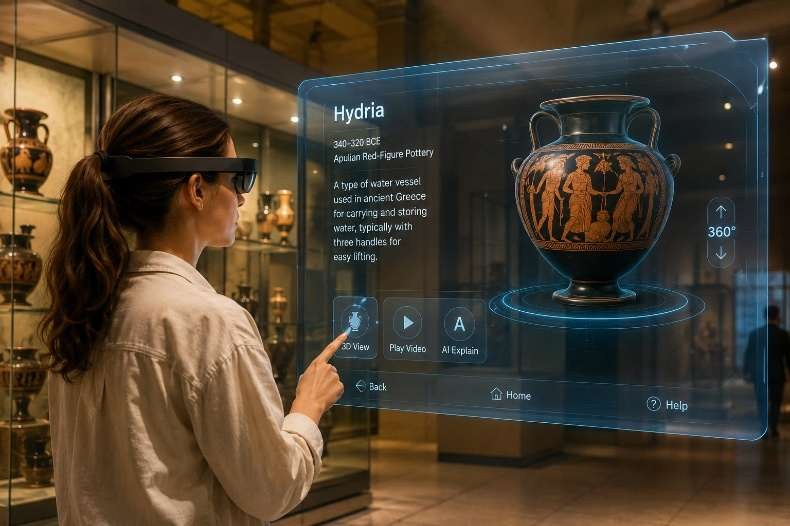
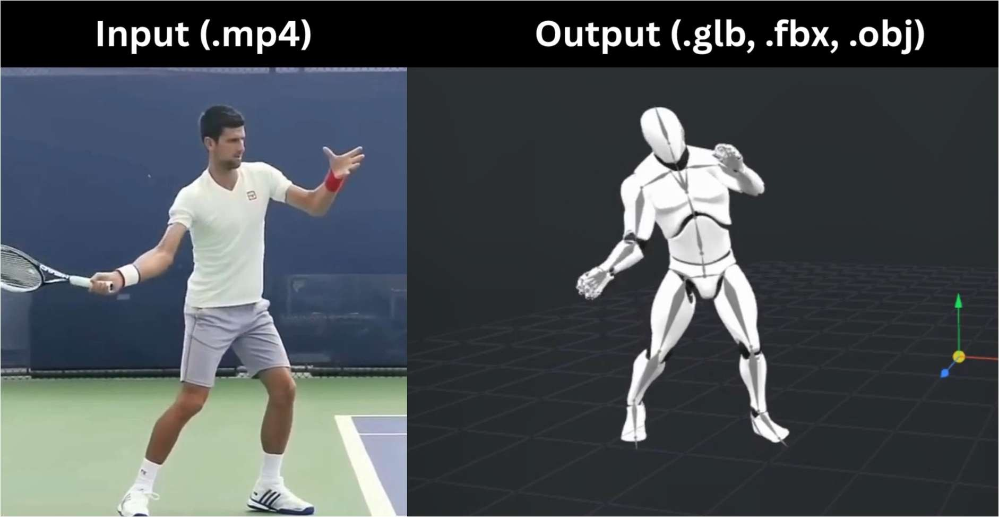
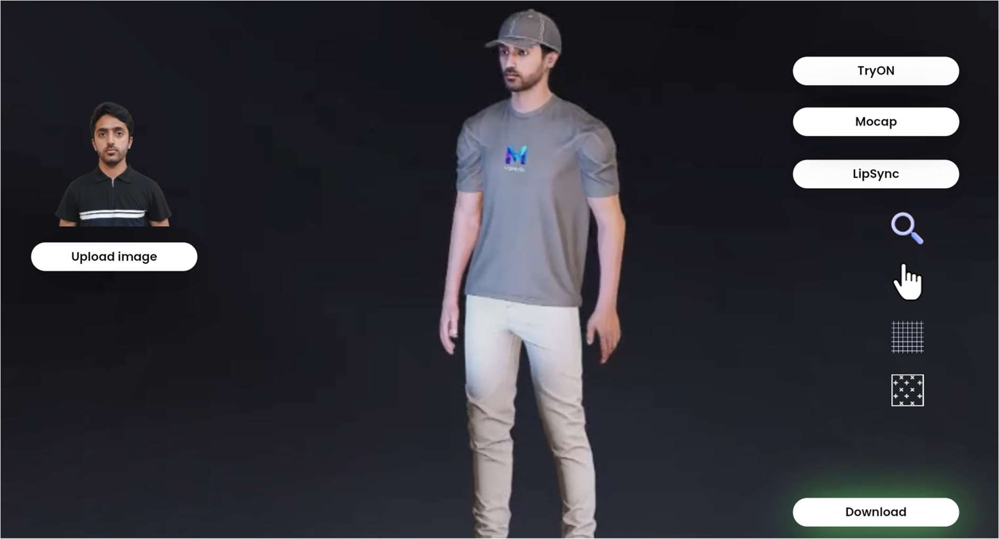
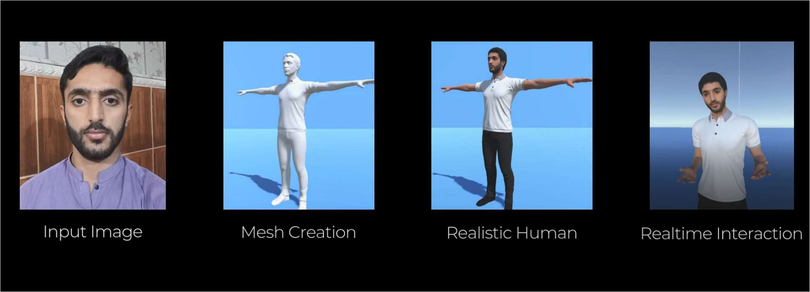

◉
3D Human Reconstruction
Reconstructing human shape and appearance from images or video, including parametric representations, mesh refinement and realistic surface detail.
SMPL / SMPL-XMesh recovery
NAVEED HUSSAIN · RESEARCH & ENGINEERING
I build end-to-end interactive systems combining computer vision, 3D human reconstruction and multimodal interaction.
My work connects visual perception and embodied interaction, from reconstruction and motion pipelines to deployable Unity-based XR experiences.
I build computer vision and digital human systems that bring together 3D reconstruction, animation and interactive AI. My projects span image-based human modeling, markerless motion capture, facial expression pipelines and immersive XR experiences.
I’m particularly interested in how visual fidelity and believable movement combine to make virtual humans more natural, useful and perceptually convincing. I bring hands-on engineering experience to problems at the intersection of graphics, perception and human-computer interaction.
Pakistan Institute of Engineering and Applied Sciences (PIEAS)
Government of Pakistan · Bachelor’s category
NaMeta LLC · Remote
Leading research work across 2D-to-3D reconstruction, neural rendering, texture synthesis, motion capture, lip sync and expression modeling.
Soul Machines · Remote
Worked with R&D on facial-expression and emotion pipelines for photorealistic digital humans.
Ökosystem aus Rechenzentren · Remote
Developed reconstruction and segmentation models and optimized computer vision algorithms.
NanoSoft Private Ltd. · On-site
Worked with OpenCV, TensorFlow and machine learning for image processing and motion tracking.
Certification names are reproduced from the supplied CV; supporting credential links were not included in the provided materials.
My research interests connect the representation of people, the design of interaction and the challenge of making intelligent systems work beyond controlled demos.
Reconstructing human shape and appearance from images or video, including parametric representations, mesh refinement and realistic surface detail.
Markerless motion capture, temporally stable pose estimation, retargeting and natural coordination between facial and body movement.
Speech-aligned facial animation, expression transfer and multimodal cues that support more believable conversational virtual humans.
Exploring realistic human appearance, texture synthesis and emerging 3D representations for visually convincing digital humans.
Investigating how virtual humans combine speech, facial and body behavior to support communication, shared activity and a stronger sense of presence.
Building interactive experiences that respond to spatial context, user activity and environmental cues, with an interest in robust deployment beyond controlled demos.
My established experience is in computer vision, digital humans and XR prototyping; the directions above distinguish this foundation from questions I hope to investigate during doctoral research.
Research-led development spanning 3D human reconstruction, multimodal interaction and deployable XR systems.
My undergraduate thesis explored how a single 2D portrait could be used to create an interactive 3D virtual teacher for physical and virtual learning environments.
The system combined image-based human reconstruction with facial expression and emotion processing, speech-driven lip synchronisation, body-language cues and a multilingual conversational interface. The implementation brought together computer vision, 3D content preparation and real-time interaction in an educational prototype.
The project received the Government of Pakistan’s Best National Final Year Project award in the Bachelor’s category for 2024. The reported interaction accuracy was 98.25%. A patent was filed for the 3D hyper-realistic virtual human for teaching. The work later continued toward product deployment through NaMeta Virtual Campus.
The academic prototype became the foundation for continued product development. This is the same project trajectory, showing how a research prototype can be engineered toward use in an educational setting.

02An immersive museum experience using plane detection, spatial anchors, contextual content and avatar-guided navigation to explore cultural heritage.

03A markerless pipeline using 2D keypoints and SMPL regression to estimate 3D motion, with temporal refinement, inverse kinematics and foot-lock correction.

04A vision-based framework for human reconstruction from monocular RGB images, combining SMPL regression, UV texture synthesis, mesh refinement and motion-aware garment deformation.

05A single-image reconstruction approach using SMPL-X parameterization and texture synthesis, with expression and motion cues for interactive digital human applications.
Building on my existing systems work, I want to move from making interactive prototypes to studying how they support people in real situations.
How can expressive digital humans support shared action, communication and a sense of presence in mixed-reality environments, rather than functioning only as talking interfaces?
Related experience: digital humans · facial and body animation · multimodal interactionHow can visual, spatial, speech and nonverbal cues help an interactive system respond appropriately to a person's activity and surroundings?
Related experience: computer vision · speech pipelines · AR interactionHow should real-time interactive systems be designed and evaluated for latency, usability and robustness across devices and real-world conditions?
Related experience: Unity prototypes · computer vision pipelines · deployed applicationsThese are prospective PhD directions, not claims that the questions have already been solved. I want to strengthen my HCI research methods, including systematic interaction evaluation and user studies.
My core strength is hands-on implementation across perception, 3D representation, animation and interactive applications.
Python, OpenCV, PyTorch, TensorFlow, Dlib, MediaPipe, object recognition, segmentation, image and video processing.
SMPL / SMPL-X, single-image and video-based reconstruction, mesh recovery, geometry refinement, UV mapping, texture synthesis and neural rendering.
OpenPose, markerless motion capture, pose estimation, temporal refinement, inverse kinematics, blendshape retargeting, lip sync, facial expression and body animation.
Unity, Unreal Engine, Blender, ARFoundation, ARCore, ARKit, SLAM, FaceMesh and real-time AR / VR / XR development.
Multimodal interaction, speech and language pipelines, Whisper, LangChain, emotion recognition, gesture and body-language cues.
Python, C++, C#, JavaScript, web integration, 3D pipelines and real-time application development.
Human-computer interaction, multimodal interfaces, gesture and body-language cues, educational virtual humans and interactive digital experiences.
I am interested in PhD research at the intersection of computer vision, embodied interaction and XR. I welcome conversations about research opportunities and collaborations that combine technical implementation with careful evaluation of interactive systems.